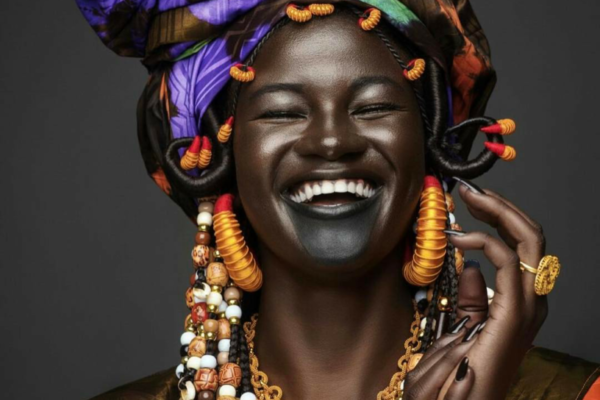
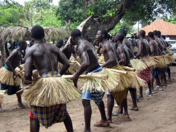
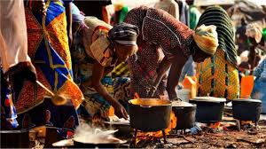

Les wolofs à eux seuls plus de 42 % de la population sénégalaise. Pour la petite histoire, les Wolofs habitaient le Tekrour, Royaume du Ghana situé dans la vallée du fleuve Sénégal. Le delta du fleuve
Sénégal a toujours été le berceau de la culture wolof. Cette ethnie du Sénégal est essentiellement musulmane et elle est composé de différentes confréries qui sont propres au Sénégal. La religion traditionnelle africaine
reste cependant bien présente chez les Lébous La structure des Wolofs se définie par un système de castes.
On retrouve les “ Geer ” au sommet de cette pyramide qui sont les aristocrates. En dessous, il y’a les “Nool” qui étaient considérés comme les bouffons de la cour. Au plus bas de l’échelle, il
y’a les “Diam” qui sont les serviteurs.



C’est à l’extrême sud-est du Sénégal, entre la Casamance et la Guinée que les Bassari et Bedik ont élus domicile. Des peuples essentiellement animistes qui ont conservé leurs cultures et leurs traditions ancestrales. Originaires
de l’Empire Mandingue, ils se sont installés dans cette région éloignée pour échapper à leurs persécuteurs Peul et à l’islamisation. Bien qu’ayant utilisé ce milieu naturel comme refuge au départ, les Bassari et les Bedik se sont
naturellement adaptés. Ces ethnies du Sénégal vouent un respect inégalable à la nature et ont su parfaitement l’utiliser à leur avantage.
Au sud du Sénégal, entre la Gambie et la Guinée Bissau, c’est la Casamance. Cette région luxuriante est le territoire de l’ethnie Diola ? Joola ? aussi établis en Guinée-Bissau et en Gambie.
Ils ont conservé l’image d’un peuple guerrier insoumis qui a été un rempart incontestable durant l’esclavage. Pour les Diolas, l’idée qu’un homme puisse en asservir un autre était au-delà de l’impensable. Aline Sitoé,
ancienne guerrière et prêtresse est l’une figure vénérée par les Diolas. Elle incarne à elle seule les spécificités et les croyances de tout un peuple.
Les Diola ont quelques similitudes avec les Sérère qui ont une connexion très proche avec la nature et les défunts. Comme les Bedik et les Bassari, ils vouent un respect inconditionnel à l’Homme et la nature.
Ils vivent essentiellement de la récolte du vin de palme, de la chasse, de la pêche et de l’élevage. Chez les Diola, l’autosuffisance alimentaire est primordiale. Ce qu’il y’a d’étonnant dans la langue diola c’est que chaque village
de Casamance à son patois. La région de la Casamance est le berceau de nombreuses traditions sénégalaises. C’est le cas de la lutte traditionnellequi est née dans cette région. Les ethnies du Sénégal, bien qu’à majorité
musulmanes, conservent toutes des pratiques animistes. Les casamançais accordent une plus grande importance aux coutumes animistes et vouent un grand respect aux ancêtres. Vous pourrez assister à de nombreuses cérémonies comme
celle du “kumpo”, ce spectre en paille tourbillonnant sur lui-même ou encore du “Kankourang” qui veille sur les jeunes initiés circoncis.
Cérémonie Diola, Casamance Kumpo, Casamance routedelasolidarite La région de la Casamance est le berceau de nombreuses traditions sénégalaises. C’est le cas de la lutte traditionnellequi est née dans cette région. Les ethnies du Sénégal, bien qu’à majorité
musulmanes, conservent toutes des pratiques animistes. Les casamançais accordent une plus grande importance aux coutumes animistes et vouent un grand respect aux ancêtres. Vous pourrez assister à de nombreuses cérémonies comme
celle du “kumpo”, ce spectre en paille tourbillonnant sur lui-même ou encore du “Kankourang” qui veille sur les jeunes initiés circoncis.